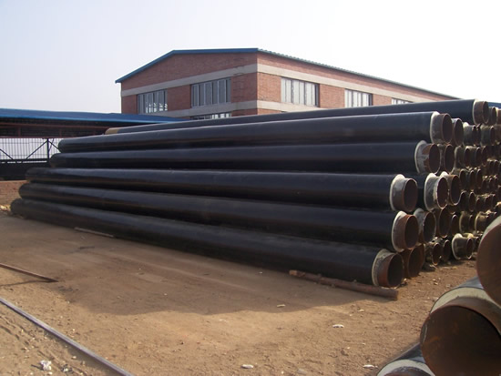

天津螺旋钢管标准家的成本支撑有限

往年开端，新《环保法》开端施行，环保执行力度加大。大邱庄矩管消费厂家市场等待环保要素会继续发酵，钢厂会呈现分明的增产行为，招致钢材供应端呈现萎缩，进而对钢价构成支撑。但是，进入4月当前，环保要素对钢厂的影响逐步淡化。从产量数据来看，4月粗钢日均产量229.7万吨，为历史次高程度。由于日均产量扫除了月份天数的影响，更能反映钢厂消费的扩张和膨胀，4月日均粗钢产量的上升，标明4月的钢厂消费较后期有所添加。钢铁资讯机构提供的数据显示，钢厂高炉开工率在4月上升，这佐证了国度统计局的产量数据。而从最新的高炉开工数据来看，天津螺旋钢管标准！5月的钢厂消费维持在高位，钢市供应压力上升。
综上所述，在需求端，由于投资增速回落，钢材需求坚持低迷;在供应端，因环保要素淡化，钢材供应压力上升;在原料端，后期推进铁矿石价钱下跌的要素正在淡化，铁矿石价钱难以再现涨势，大邱庄矩管消费厂家的本钱支撑无限。故而，美妙愿景尚未照进理想，在可以预见的工夫段内，螺纹钢或将延续弱势振荡行情。若在旺季降临后需求呈现萎缩天津螺旋钢管标准，螺纹钢价钱或向下考验后期低点。
天津市艺诺同心钢铁制造有限公司创办于2001年7月21日，专业生产各种螺旋钢管、螺旋管、直缝焊管等产品，多年来销往全国各地用于众多国家重点工程，并得到广大客户和各级领导的好评与信赖。联系电话：022-86878262
【天津螺旋钢管标准】
地址：河北沧州螺旋钢管生产基地
手机：186-3170-5801 == QQ791117